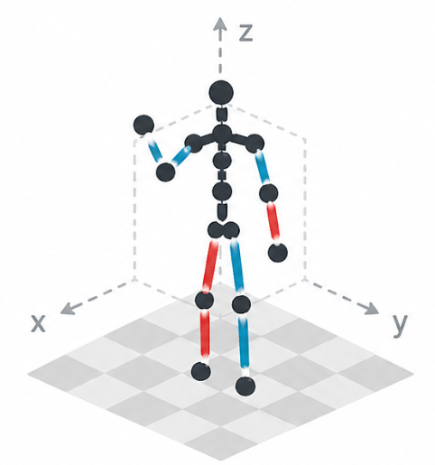

HumanMoveVQA 不是又一个“看视频猜动作标签”的评测，而是把人从第一帧出发后的平移、转向、速度、顺序和整体轨迹放进同一个世界坐标系中考察；结果显示，当前强视频 MLLM 对全局人类运动的几何推理仍接近或仅略高于随机，但面向该任务的监督微调能显著提升表现（见 PAGE 1、PAGE 2、PAGE 7）。
这篇论文切入的是视频理解中一个容易被高层语义掩盖的问题：模型可以把一段视频概括成“一个人在打网球”或“一个人在房间里走动”，但这类标签并不包含人实际如何移动。论文在摘要中指出，现有 MLLM 往往会把复杂的人体运动压缩成粗粒度语义，原文短语是 “collapse complex human motion into coarse semantic labels”（见 PAGE 1）。这个问题不是措辞细节，而是决定模型能否用于体育分析、自动导航、工业安全等场景的基础能力。
现有视频 MLLM 主要受益于大规模图文、视频文本数据。论文指出，这些数据通常只提供高层事件描述，例如“一个人走过房间”，缺少距离、轨迹和朝向变化等信息（见 PAGE 2、PAGE 3）。因此模型更容易学到视觉模式与动作标签之间的关联，而不是学到人在三维空间中如何随时间移动。
人类动作理解领域已有 MotionLLM、MotionBench、MMHU、ActionArt 等工作，但论文认为它们大多关注局部关节、姿态或行为类别。尤其是基于规范坐标系的三维姿态描述常会归一化掉全局平移和旋转，这对描述手臂、腿部姿态有利，却会抹掉本文关心的“人从哪里走到哪里、朝向如何变化”（见 PAGE 3）。
空间推理方向也有 SpatialVLM、SpatialRGPT、VSI-Bench、SAW-Bench 等工作，但不少侧重静态图像中的物体相对关系，或从第一人称路线规划视角评估场景理解。HumanMoveVQA 明确选择第三人称外部视角，评估一个被观察对象在空间中的轨迹与朝向，而不是评估相机持有者如何导航（见 PAGE 3）。
Table 1 是论文对自身定位的关键证据。它从视频输入、人类中心、外部视角、空间推理、数值推理、轨迹或路径、事件顺序、方向推理等维度比较已有 benchmark，并称 HumanMoveVQA 是第一个同时覆盖这些轴的人类空间运动评测（见 PAGE 3）。这个表格说明本文贡献主要不在新模型架构，而在提出了一个能把“全局人体运动推理”单独测出来的评测面。
原文短语：“first-frame anchored world coordinate system”（见 PAGE 1、PAGE 2）。这句话是全文方法论的中心：所有位移和朝向变化都要相对于视频第一帧解释。
HumanMoveVQA 的“运动”并不是一般意义上的动作类别。论文关心的是根节点级别的全局运动：人在水平轴、竖直轴、深度轴上的位移，以及 roll、pitch、yaw 对应的姿态或朝向变化（见 PAGE 4、PAGE 5）。因此，一个模型即使能识别“跳跃”“转身”“走路”，仍可能无法回答“第三个四分之一视频中向左和向右哪个总位移更大”。
外部视角也是关键限定。论文不是从行人自身视角问“我该往哪里走”，而是从视频观察者视角追踪被拍摄的人。对于 RICH 和 EgoBody 等多视角数据，论文把每个相机视图作为独立样本，同时要求同一底层三维运动的所有视角进入同一个 train/test split，以避免数据泄漏（见 PAGE 4、PAGE 6）。
另一个必要概念是 chance-normalized score。因为不同题型的选项数不同，二选一的 Existence 随机准确率是 50%，三选一的 Comparative 和 Dominant 是 33.33%，四选一的 Numerical、Ordering、Temporal、Trajectory Affordance 是 25%。论文因此不只报告 accuracy，还报告按随机基线归一化后的 Score（见 PAGE 7）。
论文显式给出的核心数学定义主要是 Score；下面的若干公式中，除 Score 外，其余是对论文文字定义和表格阈值的符号化复述，均标注证据页，目的只是让定义更清楚，不构成额外方法主张。
公式 1：chance-normalized Score。
$$ \mathrm{Score}=\frac{1}{n}\sum_{i=1}^{n=7}\frac{\mathrm{accuracy}_i-\mathrm{chance}_i}{100-\mathrm{chance}_i}\times 100 $$
解释：该公式把每个题型的准确率先减去随机水平，再除以可提升空间，最后在七类题上取平均；因此不同选项数量的题型可以放在同一个分数尺度中比较（见 PAGE 7）。
公式 2：各题型随机基线。
$$ \mathrm{chance}_{\mathrm{Existence}}=50\%,\quad \mathrm{chance}_{\mathrm{Comparative}}=\mathrm{chance}_{\mathrm{Dominant}}=33.33\%,\quad \mathrm{chance}_{\mathrm{Other}}=25\% $$
解释：这是论文对七类多选题随机阈值的文字说明；“Other”在这里指 Numerical、Ordering、Temporal 和 Trajectory Affordance（见 PAGE 7）。
公式 3：相对第一帧的运动记号化。
$$ \Delta \mathbf{p}_t=\mathbf{p}_t-\mathbf{p}_{t_0},\qquad \Delta \mathbf{r}_t=\mathbf{r}_t-\mathbf{r}_{t_0} $$
解释：论文说所有 Spatial Codes 都相对第一帧归一化，用来表示从初始状态开始的变化；这里用 $\Delta \mathbf{p}_t$ 表示根节点位移变化，用 $\Delta \mathbf{r}_t$ 表示朝向或旋转变化（见 PAGE 4、PAGE 5）。
公式 4：平移离散化示例。
$$ \mathrm{no\_action}: -1\le v\le 1,\quad \mathrm{short\_right}: 3<v\le5,\quad \mathrm{moderate\_right}:5<v\le8,\quad \mathrm{very\_long\_right}:v>10 $$
解释：Table 13 给出位移阈值，单位为 10cm；公式展示的是 X 轴向右方向的一组代表性区间，说明连续 3D 估计如何变成可用于语言模板的类别（见 PAGE 19、PAGE 20）。
公式 5：yaw 旋转离散化示例。
$$ \mathrm{significant\_turn\_clockwise}:v<-4,\quad \mathrm{moderate\_turn\_clockwise}:-4\le v<-3,\quad \mathrm{no\_action}:-2\le v\le0 $$
解释：Table 13 也给出旋转阈值，旋转单位为度；该定义支撑“顺时针转”“逆时针转”等问答选项的确定性生成（见 PAGE 20）。
公式 6：测试集题量构成。
$$ 10203=1937+1490+1472+1476+1483+983+1352 $$
解释：这是 Table 2 中七类题目的总和，依次对应 Existence、Numerical、Comparative、Dominant、Temporal、Ordering、Trajectory Affordance；Ordering 数量最低，因为它要求同一时间四分之一内至少有两个满足强度条件的离散事件（见 PAGE 6）。
HumanMoveVQA 的方法不是直接让大模型从视频中生成问题，而是先把视频变成结构化的世界坐标运动轨迹，再从这些轨迹中确定性生成多项选择题。Figure 1 给出总体概览：输入视频经由世界视图展示、空间代码、服装描述、质量控制和统计计算，最终生成七类运动问答（见 PAGE 1）。Figure 2 进一步展示数据生成流水线：PromptHMR 恢复 SMPL-X 3D 人体姿态，MotionScript 风格的 Spatial Codes 编码平移和旋转，BLIP-2 生成衣着描述，随后经过过滤和模板生成（见 PAGE 5）。

flowchart TB
V[Input Video] --> HMR[PromptHMR
World Space SMPL-X]
HMR --> SC[Spatial Codes
Translation and Rotation]
V --> BLIP[BLIP-2
Appearance Tags]
SC --> QC[Quality Control]
BLIP --> QC
QC --> ST[Motion Statistics]
ST --> QA[Template QA
Seven Categories]
QA --> EV[Video MLLM Evaluation]
上图是对论文 Figure 2 的结构化重绘，而不是新增实验。它强调本文评测的关键假设：问答的 ground truth 来自世界一致的三维轨迹，而非人工主观描述。正因为如此，模型必须在视频中推断运动轨迹和朝向，而不能只依赖问题文本中的语言偏置。
外部视角视频中的一个根本难点是，画面中的人移动可能来自人的真实运动，也可能来自相机运动。论文用 PromptHMR 将 2D 视频提升到 3D SMPL-X 姿态，并恢复世界空间中的 root translation 和 orientation，从而建立相对于第一帧的固定参考系统（见 PAGE 4、PAGE 5）。
这个选择直接服务于本文的核心问题。如果相机向右平移，而人站着不动，普通像素轨迹会误以为人在向左移动；世界坐标重建则试图把这种 ego-motion 解耦出去。论文明确说，该参考系统会中和相机运动或视角变化，使所有运动都相对于场景第一帧解释（见 PAGE 4）。
需要注意的是，PromptHMR 和 SMPL-X 在本文中是标注生成工具，而非被评测模型的输入。Figure 4、Figure 6、Figure 7、Figure 8 的 world-view 可视化只用于说明，不提供给模型（见 PAGE 8、PAGE 13、PAGE 14、PAGE 15）。这保证了评测对象仍是视频 MLLM 从原始视频中推理运动，而不是读取显式三维轨迹。
原始 3D 坐标维度高且含噪，不能直接稳定地映射到自然语言问题。论文借鉴 MotionScript，把 SMPL-X track 转换为 Spatial Codes，只保留 root-level dynamics：displacement_x、displacement_y、displacement_z、rotation_roll、rotation_pitch、rotation_yaw（见 PAGE 5）。
Spatial Codes 的价值在于把连续几何变化变成类别词表。例如，位移可被离散为 short、moderate、long，时间动态可被离散为 slow 和 fast（见 PAGE 5）。不过，提供文本中只完整展示了 Table 13 的空间离散阈值；PAGE 5 提到 Table 14 讨论时间离散，但所给全文在 PAGE 22 截断，未包含 Table 14，因此速度阈值的精确定义证据不足。
这种离散化也解释了为什么论文要过滤 very_short 事件。过短或过小的运动很容易来自 3D 重建噪声，把它们纳入问答会制造不可验证样本。论文在质量控制中丢弃短于 5 帧的运动段以及 very_short 类事件（见 PAGE 5）。
EgoBody 包含两个人的室内互动录制。若直接问“这个人向左走了吗”，模型可能不知道目标是谁。论文使用 BLIP-2 从随机采样的三帧中生成衣着描述，如“blue jacket”，并把这些描述注入问题提示，以锚定目标人物（见 PAGE 5）。
这一设计的评测意义很明确：模型答错应主要归因于运动推理失败，而不是目标指代不清。Figure 8 中的 EgoBody 示例就出现了“person wearing brown jacket”“person wearing white shirt”等措辞，用服装描述区分个体（见 PAGE 15）。
HumanMoveVQA 的七类问题分别是 Existence、Comparative、Dominant、Numerical、Ordering、Temporal 和 Trajectory Affordance。论文把它们组织到三类核心能力轴：Motion Aggregation、Sequential Ordering、Trajectory-level inference（见 PAGE 4）。
Existence 测检测：某个移动或旋转事件是否出现。Comparative 测比较：同一轴上相反方向哪个次数、幅度或速度更大。Dominant 测聚合后的主方向，既可全局也可按四分之一视频局部询问。Numerical 测计数或总位移估计。Ordering 要求识别某个时间四分之一内锚点事件之后紧接发生什么。Temporal 把事件检测和时间定位结合起来。Trajectory Affordance 则要求汇总长期位移、路径长度、轨迹形状和终点位置（见 PAGE 5、PAGE 6、PAGE 18、PAGE 19）。
附录 Table 12 给出每类题的示例问题，例如“人是否在任何时刻向左移动”“哪个事件整体发生得更多”“第一季度中某个事件之后发生什么”“人的整体位置如何相对起点演化”等（见 PAGE 18、PAGE 19）。这些例子说明，benchmark 不仅问局部事件，还问长时段统计和整体轨迹。
论文特别强调 distractor 设计。错误选项不是随便生成，而是 “semantically plausible but geometrically inconsistent”（见 PAGE 4）。换言之，错误答案在语言上合理，但与轨迹几何不一致。这样可以降低模型靠语感、选项长度或模板规律猜中的概率。
对于 Numerical，论文把计数干扰项采样在正确值的 ±3 内，把幅度干扰项采样在 ±20% 内。Comparative 和 Dominant 的选项限制在同一轴的相反方向，并包含 tie 处理。Temporal 和 Ordering 的选项混合位移与旋转标签，避免模型通过运动类型排除答案。所有类别还会打乱选项位置，并约束答案分布近似均匀（见 PAGE 6）。
HumanMoveVQA 使用三个源数据集：EMDB、RICH 和 EgoBody。EMDB 是单人、动态手持相机、20–60 秒视频，运动和相机轨迹变化较大；RICH 是单人、多视角、室内外动作，多数片段短于 20 秒；EgoBody 是多视角、两人室内交互录制，作者将长视频切成 30–60 秒片段，并选择单个人作为每个样本的目标（见 PAGE 4）。
| 数据集 | 测试视频数 | 总 QA | Exist. | Numer. | Comp. | Domin. | Temp. | Order. | Traj. |
|---|---|---|---|---|---|---|---|---|---|
| EMDB | 11 | 786 | 143 | 110 | 110 | 110 | 110 | 100 | 93 |
| RICH | 32 | 2,220 | 416 | 320 | 318 | 320 | 320 | 227 | 299 |
| EgoBody | 54 | 7,197 | 1,378 | 1,060 | 1,044 | 1,046 | 1,053 | 656 | 960 |
| Total | 97 | 10,203 | 1,937 | 1,490 | 1,472 | 1,476 | 1,483 | 983 | 1,352 |
Figure 3 展示三个源数据集在 train/test split 前的运动特征：EMDB 视频数较少但运动事件方差高，EgoBody 视频较长但运动活动有限，RICH 片段短且事件少；位移 X/Z 和位移/旋转统计也显示 EMDB 覆盖范围更宽，RICH 集中在低事件区域，EgoBody 的位移可接近 EMDB 但旋转更少（见 PAGE 6、PAGE 7）。这说明三个数据源不是简单数量叠加，而是提供了不同运动分布。
论文评估了闭源、开源和运动专用模型。闭源包括 GPT-4o 和 Gemini-3-Flash，其中 Gemini 还做了 text-only 版本以衡量语言偏置。开源包括 Video-LLaVA、VideoGPT+、LLaVA-NeXT-Video、InternVL3.5 和 Qwen3-VL。运动专用模型包括 MotionLLM，它带有基于关节级 caption 训练的 motion encoder（见 PAGE 13）。
监督微调使用 Qwen3-VL 8B，训练集包含 89,818 个 QA：EMDB 3,958、RICH 45,537、EgoBody 40,323。训练方式为 LoRA，rank 16、alpha 32，训练 5 个 epoch，框架是 LlamaFactory，输入为 32 个均匀采样帧、256×256 分辨率，并使用验证集早停；训练在两张 NVIDIA H100 上完成，batch size 为 2（见 PAGE 13）。
这里有一个需要谨慎读数的地方：主文 Table 3、Table 5、Table 6 的 SFT 分数与部分附录 ablation 表中同名 SFT 分数不完全一致。例如 EgoBody 主结果表给出 43.74，而 Reasoning Supervision 表中 SFT 行给出 41.35（见 PAGE 16、PAGE 21）。论文截断文本未解释这种差异，本文在比较时优先引用对应表内的数值，并避免跨表混作同一设置。
EMDB 是主文首先分析的长时段、高多样性单目视频。Table 3 显示，Gemini-3-Flash 是闭源零样本中最强者，Score 为 16.29；GPT-4o 为 6.84；Qwen3-VL 8B 零样本为 12.83；MotionLLM 为 -9.53。Qwen3-VL 8B SFT 达到 37.88，接近把基础 Qwen3-VL 8B 的归一化分数提高到 2.95 倍（见 PAGE 7）。
| 模型 | Frames | Existence | Numerical | Ordering | Temporal | Traj. Afford. | Score |
|---|---|---|---|---|---|---|---|
| Random Chance | – | 50.00 | 25.00 | 25.00 | 25.00 | 25.00 | 0.00 |
| Human subset | – | 100.00 | 85.50 | 75.50 | 95.00 | 75.00 | 78.71 |
| GPT-4o | 32 | 60.10 | 29.01 | 32.00 | 29.09 | 14.00 | 6.84 |
| Gemini-3-Flash | 2 FPS | 80.42 | 28.18 | 29.00 | 43.64 | 32.26 | 16.29 |
| Qwen3-VL 8B | 32 | 64.34 | 29.09 | 30.00 | 29.09 | 27.96 | 12.83 |
| MotionLLM 7B | 8 | 46.15 | 6.36 | 17.00 | 21.10 | 12.90 | -9.53 |
| Qwen3-VL 8B SFT | 32 | 83.92 | 70.00 | 47.00 | 49.09 | 50.54 | 37.88 |
最有信息量的不是总分，而是类别差异。Gemini-3-Flash 在 Existence 上达到 80.42，说明它能较好检测“是否发生某动作”；但 Comparative 只有 30.00，低于 33.33 的随机基线，说明检测到事件不等于能聚合同一轴上相反方向的次数或幅度（见 PAGE 7）。GPT-4o 的 Trajectory Affordance 只有 14.00，显著低于四选一随机水平，表明长时段整体轨迹跟踪非常困难（见 PAGE 7）。
MotionLLM 的结果尤其支持论文论点：它是运动专用模型，却在全局轨迹推理上表现最差。论文解释为关节级监督不足以帮助全局移动推理（见 PAGE 7、PAGE 8）。这不是说关节信息无用，而是说明“身体怎么摆”和“人在空间中怎么走”是不同监督信号。
Figure 4 给出 EMDB 的定性样例：模型需要回答存在性、比较、主方向、数值、顺序、时间和轨迹问题；world-view 只作说明，不给模型。论文报告 Ours 在多个类别上更一致地选择正确答案（见 PAGE 8）。这与 Table 3 的数值相互支撑。
RICH 片段更短、运动事件更少。Table 5 显示 Gemini-3-Flash 零样本 Score 为 16.72，Qwen3-VL 8B 为 11.83，MotionLLM 为 -6.47，Qwen3-VL 8B SFT 达到 47.48（见 PAGE 15）。SFT 在 Numerical 上达到 78.75，在 Dominant 上达到 68.44，说明在较短且更受控的视频中，世界一致监督能强力提升统计型运动问题。
EgoBody 更复杂，因为它包含两人互动。Table 6 显示 GPT-4o Score 为 4.93，Gemini-3-Flash 为 9.80，Qwen3-VL 8B 为 10.58，MotionLLM 为 -10.03，而 QwenVL3-8B SFT 达到 43.74（见 PAGE 16）。不过 Ordering 仅 31.25，接近四选一随机水平，说明多人物场景下的精确事件排序仍是瓶颈。
| 测试集 | GPT-4o Score | Gemini-3-Flash Score | Qwen3-VL 8B Score | MotionLLM Score | SFT Score | 主要现象 |
|---|---|---|---|---|---|---|
| EMDB | 6.84 | 16.29 | 12.83 | -9.53 | 37.88 | 长时段与动态相机使轨迹聚合困难 |
| RICH | 5.85 | 16.72 | 11.83 | -6.47 | 47.48 | 短片段中 SFT 对数值和主方向提升明显 |
| EgoBody | 4.93 | 9.80 | 10.58 | -10.03 | 43.74 | 多人物身份与事件排序仍困难 |
这些结果共同支持论文的核心判断：现有强模型不是完全没有运动感知能力，它们在 Existence 或部分 Temporal 任务上能超过随机；但当问题需要计数、比较、顺序、长期聚合时，性能迅速下降。论文把这概括为当前 Video MLLM 在空间和时间中的 motion reasoning 仍显著不足（见 PAGE 8）。
Table 4 和 Figure 5a 研究在一个数据集上训练、到另一个数据集上测试的情况。in-domain 训练通常最高：EMDB→EMDB 为 35.02，RICH→RICH 为 42.46，EgoBody→EgoBody 为 39.20（见 PAGE 8、PAGE 9）。这说明三个数据源的运动分布确实不同。
| Train → Test | EMDB | RICH | EgoBody |
|---|---|---|---|
| EMDB | 35.02 | 30.21 | 30.81 |
| RICH | 28.38 | 42.46 | 34.53 |
| EgoBody | 33.33 | 35.89 | 39.20 |
不过迁移不是对称的。论文认为 EgoBody 泛化较好，原因可能是样本量更大、多人场景更复杂；EMDB 泛化最弱。Numerical、Temporal 和 Comparative 相对稳定，而 Ordering 仍是最难类别（见 PAGE 9）。这支持联合训练策略：没有单一数据集能覆盖全部运动分布。
帧数实验比较 16、32、64 个均匀采样帧。Table 7 显示 32 帧通常最优；在 RICH 和 EgoBody 上类别波动小于约 3 个百分点，但 EMDB 中 Comparative 下降、Numerical 上升。论文还观察到 Ordering 随帧数增加略有下降，可能是过多冗余帧干扰精确顺序推理（见 PAGE 15、PAGE 16、PAGE 18）。
分辨率实验比较 128×128、256×256、384×384。Table 8 显示三个数据集都呈“倒 V”形，256×256 最优；384×384 的下降有时比 128×128 更明显，论文解释为高分辨率可能引入更多背景 token，稀释运动信号，尤其在人物离相机较远的 RICH 中更明显（见 PAGE 16、PAGE 17、PAGE 18）。
| 消融项 | 最优设置或结论 | 关键证据 | 解释 |
|---|---|---|---|
| Frame Count | 32 帧通常最优 | Table 7；Figure 10 | 16 帧可能欠采样，64 帧可能引入冗余，Ordering 不一定受益于更多帧（见 PAGE 15、PAGE 16、PAGE 18）。 |
| Resolution | 256×256 最优 | Table 8；Figure 11 | 低分辨率损失位置信息，高分辨率可能放大背景 token（见 PAGE 16、PAGE 17、PAGE 18）。 |
| Category-specific SFT | 联合训练最好 | Table 11；Figure 5b | 单类训练提升目标轴但常伤害其他轴，联合训练提供正迁移（见 PAGE 9、PAGE 21）。 |
| Reasoning trace SFT | 短 reasoning trace 低于 option-only SFT | Table 9 | 额外推理结构带来多步误差，Ordering、Trajectory Affordance、Dominant 下降明显（见 PAGE 16、PAGE 21）。 |
Per-category vs. Joint Training 的结果也值得单独看。类别专训可以显著提升目标任务，例如 Numerical 专训提升目标轴，但往往降低其他类别；Temporal SFT 会降低 Dominant，Trajectory Affordance SFT 对其他任务帮助有限。Figure 5b 显示 Existence 是少数几乎被所有 SFT 副作用提升的类别，而 joint training 综合最好（见 PAGE 9、PAGE 21）。
Reasoning supervision 的负结果对当前 MLLM 训练很有启发。论文添加短 reasoning trace 后，模型在所有数据集上都低于只训练答案选项的 SFT。EMDB 的 Trajectory Affordance 从 50.54 降到 33.33，RICH 的 Ordering 从 39.65 降到 29.20，EgoBody 的 Temporal 从 57.74 降到 49.28（见 PAGE 21）。这说明在该任务上，简单添加结构化推理文本并不自动提高几何推理，甚至可能让模型先学会生成形式，再在事实上出错。
论文还在 ActionArt 上做域外评估。ActionArt 更接近关节级或细粒度人体动作理解；Qwen3VL-8B 零样本平均 60.92，而 HumanMoveVQA SFT 后的 Qwen3VL-8B SFT 为 46.61，低于自身零样本，但高于 MotionLLM 的 28.96（见 PAGE 17、PAGE 21）。
这个结果限制了 HumanMoveVQA 的外推范围。它训练的是全身位移、朝向和时间顺序，不等价于学习手臂、腿部、局部姿态关系。论文据此认为 trajectory-level understanding 和 joint-level understanding 是互补能力，需要不同监督信号（见 PAGE 17）。
本文未提供可确认的公开代码。给定论文元信息中 code_url 和 project_url 均为空；提供的正文与附录文本未出现可核验的 GitHub 仓库地址。因此，本文不能给出源码文件路径、函数名或代码段，也不能把论文组件映射到真实实现文件。
能从论文证据中确认的是组件级流程：PromptHMR 用于 3D SMPL-X 世界空间重建，MotionScript 启发的 Spatial Codes 用于位移和旋转离散化，BLIP-2 用于衣着描述，随后进行视频级和事件级质量控制，再根据统计量和模板确定性生成 QA（见 PAGE 4、PAGE 5、PAGE 6）。这些是方法组件，不是代码实现证据。
复现方面，训练细节相对充分：数据量、LoRA 参数、epoch、输入帧数、分辨率、框架和硬件都给出（见 PAGE 13）。但缺少公开代码会影响三个环节的可复验性：PromptHMR 输出如何后处理到世界坐标、模板规则如何完整实现、质量控制中的人工剔除标准如何复现。尤其是 Table 14 未出现在所给截断文本中，时间速度离散阈值证据不足。
HumanMoveVQA 的主要贡献是把“全局人体运动”从高层视频语义中分离出来。它不满足于模型说出“走路”“跳跃”“打球”，而是要求模型回答“朝哪个方向移动更多”“某个事件之后发生什么”“终点相对起点在哪里”“路径形状如何”。这种问题形式更接近需要几何一致性的视觉推理（见 PAGE 4、PAGE 6、PAGE 18）。
第二个贡献是世界一致监督。论文通过第一帧锚定的世界坐标系，把相机运动从人运动中解耦，并把 3D tracks 转为可验证的问答。原文短语 “this is a learnable problem” 指向一个积极结论：闭源和开源零样本模型当前做不好，但 Qwen3-VL 8B 经定向监督可以显著提升（见 PAGE 1、PAGE 7、PAGE 9）。
第三个贡献是评测设计比较克制。论文没有只报告一个总分，而是拆成七类能力，并使用 chance-normalized score 避免选项数差异造成误读。它还加入 text-only baseline，以检查语言偏置；加入 Human subset，以显示任务对人类并非不可解；加入 MotionLLM，以验证关节级运动监督对全局轨迹推理并不足够（见 PAGE 7、PAGE 13）。
从应用角度看，这类 benchmark 对视频理解团队的价值主要在评估和诊断，而非直接部署。它能帮助发现模型在轨迹描述、异常运动理解、视频标注质检中的短板。例如，如果模型在 Existence 高但 Numerical 和 Ordering 低，就说明它看到了事件，却不会稳定计数或排序。这个诊断信号比单一视频 QA 总分更可操作。
方法边界也很清楚。HumanMoveVQA 依赖 3D 重建质量；如果 PromptHMR 在遮挡、远距离、多人交互中漂移，QA ground truth 就会受影响。论文通过人工过滤和事件过滤缓解，但不能彻底消除由自动标注链路带来的偏差（见 PAGE 5、PAGE 9）。
作者自述的局限包括三点。第一，benchmark 依赖从单目视频中获得可靠 motion tracking；对细微旋转和短时事件，噪声或歧义标注会影响训练信号和评估可靠性。第二，论文没有评估多人运动或人物交互，只是在 EgoBody 中选择单人作为目标。第三，Ordering 这类任务可能需要其他创新，单纯 SFT 仍不够（见 PAGE 9）。
本文的独立判断是，第一帧锚定坐标系虽然必要，但也会放大初始化误差：如果第一帧姿态或方向估计有偏差，后续所有相对位移和旋转标签都会继承该偏差。论文强调 quality control，但没有在给定文本中量化 PromptHMR 误差如何传播到 QA 答案，因此这部分证据不足。
第二个独立判断是，多项选择模板适合 benchmark 规模化，但仍不能完全代表开放式视频理解。模型可能在固定选项上学会排除错误，却未必能生成精确自然语言轨迹描述。Reasoning trace SFT 的负结果也提示，当前监督形式对“可解释几何推理”的支持还不成熟（见 PAGE 16、PAGE 21）。
第三，公开代码缺失削弱了评测基准的可审计性。论文给出了足够多的实验数值，但没有可确认仓库时，外部研究者很难检查模板生成、答案均衡、过滤规则和随机种子。对于一个以“确定性生成”和“可验证 ground truth”为卖点的 benchmark，这一点尤其重要。
第四，论文的 broader impact 提到该 benchmark 可用于体育分析和工业安全，也可能被滥用于人类监控或敏感行为分析；作者的缓解方式是只提供标注和源数据引用，要求用户遵守原数据许可（见 PAGE 18）。这说明数据使用边界不是附属问题，而是这类人体运动理解 benchmark 必须显式处理的风险。
HumanMoveVQA 的结论可以压缩为三句话。第一，当前 Video MLLM 对高层动作标签已经较强，但对全局人体轨迹、朝向、顺序和长期聚合仍明显不足。第二，把视频提升到第一帧锚定的世界坐标系，并生成结构化 QA，可以系统评测这类能力。第三，针对性世界一致监督能显著提升 Qwen3-VL 8B，说明问题可学习，但 Ordering、多人物交互、开源可复现和开放式推理仍未解决（见 PAGE 7、PAGE 8、PAGE 9）。
这篇论文的价值不在于提出一个可直接部署的感知模型，而在于给视频理解研究补上一个几何评测坐标系：模型是否真的理解人的运动，不应只看它能否命名动作，还要看它能否在时间中跟踪位移、方向、速度、顺序和终点。
PAGE 1：论文标题、作者、摘要、Figure 1；核心论点包括现有 MLLM 把复杂运动压缩成粗标签、提出 HumanMoveVQA、生成 10K+ QA、七类问题与闭源模型能力缺口。
PAGE 2：Introduction；说明高层视频 caption 的信息瓶颈、现有视频 MLLM 与局部关节方法不足、提出第一帧锚定坐标系和三项贡献。
PAGE 3：Related Work 与 Table 1；对比已有 benchmark，说明 HumanMoveVQA 同时覆盖视频、人类中心、外部视角、空间、数值、轨迹、事件顺序和方向推理。
PAGE 4：HumanMoveVQA 方法开头、数据源和 World-Space Reconstruction；定义三类认知轴、distractor 设计、EMDB/RICH/EgoBody 来源、PromptHMR 与第一帧参考系统。
PAGE 5：Figure 2、Spatial Codes、BLIP-2 identity grounding、Quality Control；给出六类空间代码、相对第一帧归一化、丢弃短于 5 帧和 very_short 事件。
PAGE 6：七类 QA 生成、distractor 策略、Table 2 测试集统计、Figure 3 运动分布说明；包含 10,203 QA 的类别构成。
PAGE 7：Score 公式、随机基线、Table 3 EMDB 结果；说明 Gemini-3-Flash、GPT-4o、Qwen3-VL、MotionLLM 和 SFT 的主要差异。
PAGE 8：Figure 4 定性结果、Table 4 跨数据集评估、主文 takeaways；指出 zero-shot 局限、SFT 提升、joint-level 数据不足和 Ordering 难度。
PAGE 9：Figure 5、跨数据集泛化、类别专训与联合训练、Conclusion 和 Limitations；包括作者自述局限。
PAGE 13：Appendix 实验设置和实现细节；列出评估模型、89,818 训练 QA、LoRA rank 16 alpha 32、5 epochs、32 帧、256×256、两张 H100。
PAGE 14–16：RICH 与 EgoBody 结果、Figure 7、Figure 8、Table 5、Table 6、Table 7；支撑跨数据集主结果和帧数消融。
PAGE 16–18：分辨率消融、reasoning supervision、ActionArt 域外评估、Figure 9–11、Table 8；支撑 256×256 最优、reasoning trace 低于 option-only、轨迹监督不能替代关节监督。
PAGE 18–21：Broader Impact、Table 12、Table 13、Table 9、Table 10、Table 11；支撑七类问题示例、空间离散阈值、reasoning supervision 数值、ActionArt 结果和类别联合训练结论。
PAGE 22：系统 prompt 开始但文本截断；Table 14 和完整 prompt 后半部分未在提供文本中出现，因此时间速度离散阈值与完整 prompt 细节证据不足。